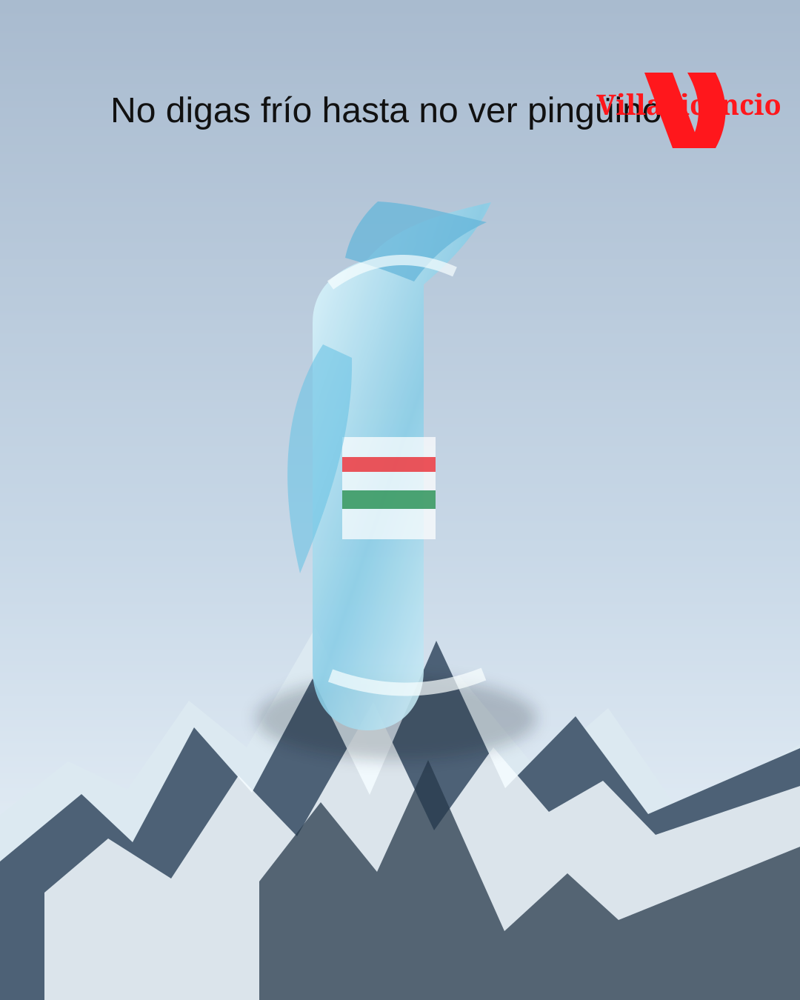
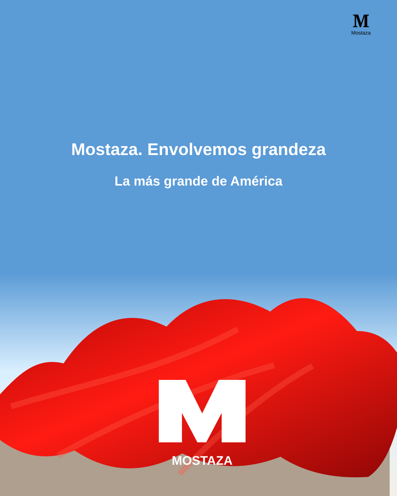
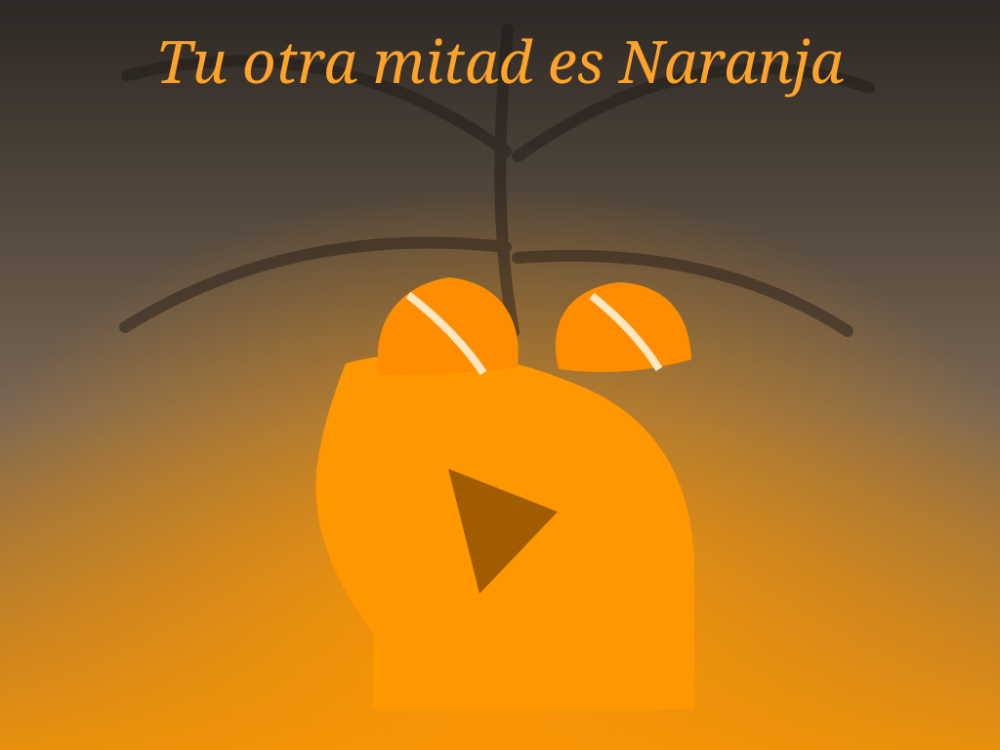

Villavicencio — Agua fresca
Publicidad gráfica para comunicar el concepto de agua fresca desde una metáfora visual vinculada al frío, la montaña y la pureza del producto.
Herramientas: Adobe Photoshop.
Creativo publicitario / estudiante de Publicidad
Portfolio en construcción constante: campañas, conceptos y piezas pensadas para marcas que quieren decir algo propio, no solamente estar presentes.
Menos ruido. Más tensión. Una marca se recuerda cuando encuentra una verdad y la vuelve inevitable.
01Soy Bautista Rodríguez Casal, creativo publicitario junior y estudiante de Publicidad. Me interesa construir ideas simples con una dirección clara: piezas que puedan vivir en social, activaciones, gráfica, digital o donde la audiencia realmente esté prestando atención.
Trabajo desde la observación, el humor, la cultura y la estrategia. Disfruto bajar un insight a un concepto fuerte, encontrar un tono propio y convertirlo en una campaña que se pueda defender tanto en una presentación como en la calle.
Trabajos destacados

Publicidad gráfica para comunicar el concepto de agua fresca desde una metáfora visual vinculada al frío, la montaña y la pureza del producto.
Herramientas: Adobe Photoshop.

Pieza gráfica que lleva el diferencial de tamaño de Mostaza a una hipérbole visual: una hamburguesa monumental para reforzar el concepto “la más grande”.
Herramientas: Adobe Photoshop.

Desarrollo conceptual para vender el color naranja como una elección deseable, cálida y protagónica dentro de una publicidad gráfica.
Herramientas: Adobe Photoshop e Illustrator.